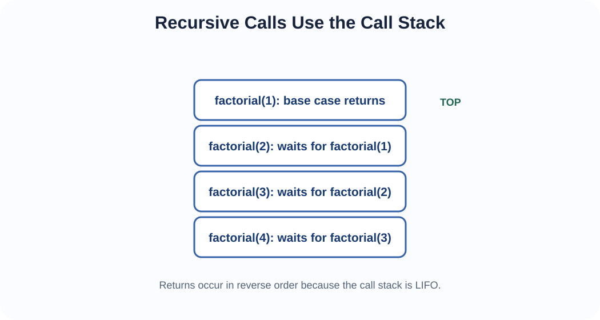
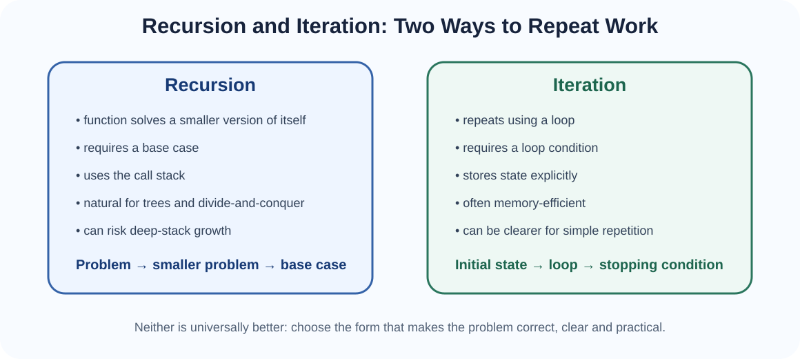
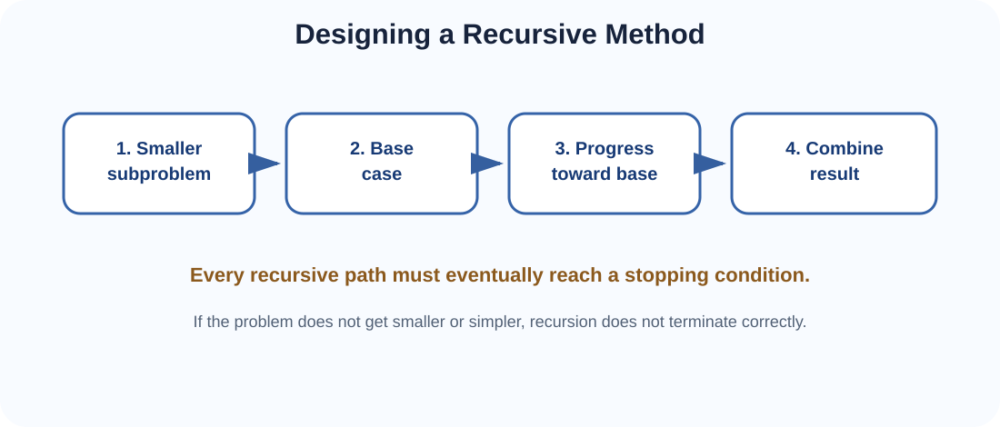
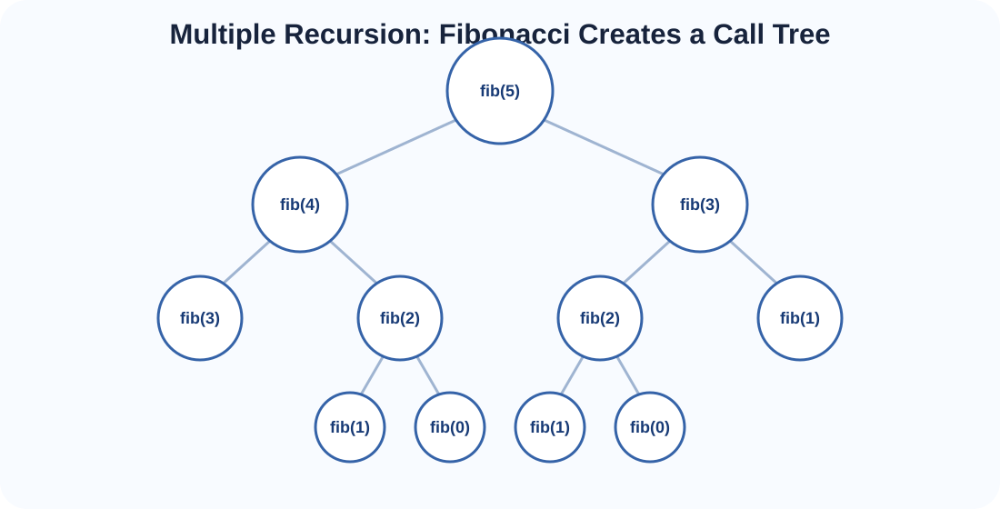
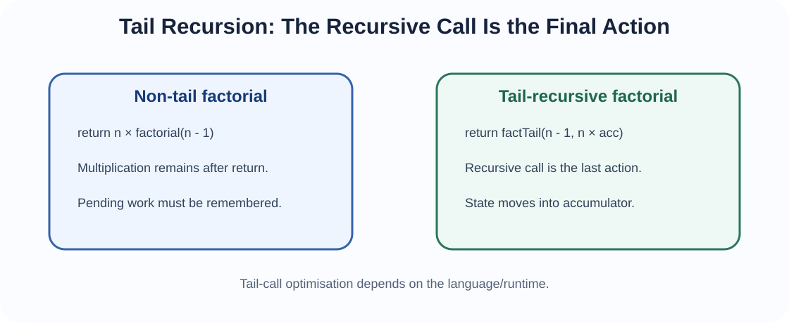

Two ways of expressing repeated computation — one through self-reference, the other through explicit looping.
Recursion often feels mysterious until the call stack is visible. Every active function call needs to remember information such as its parameters, local variables and where execution should continue after the call returns. Those records are stored as stack frames. Because the call stack is LIFO, the most recently called unfinished function returns first.


Recursion occurs when a function solves a problem partly by calling itself, directly or indirectly, on a smaller or simpler instance. Iteration repeats operations using a loop such as for or while.
Both can often express the same computation. Their difference is mainly how progress and unfinished work are represented.
Recursive definitions long predate computers and appear naturally in mathematics. In programming, recursion became especially important with languages designed for symbolic processing and functional programming. Lisp, developed in the late 1950s, helped make recursive list and symbolic processing influential.
Iteration has equally deep roots in algorithmic computation and procedural programming. Modern languages normally support both approaches because different problems are clearer in different forms.

A correct recursive method normally has four conceptual parts:
n! = n × (n - 1) × ... × 1
0! = 1ALGORITHM RecursiveFactorial(n)
IF n = 0
RETURN 1
RETURN n × RecursiveFactorial(n - 1)ALGORITHM IterativeFactorial(n)
result ← 1
FOR i ← 2 TO n
result ← result × i
RETURN resultThe recursive version stores unfinished multiplications in call frames. The iterative version stores progress explicitly in result and the loop variable. Both do O(n) multiplication work. Ordinary recursion uses O(n) call-stack space; iteration uses O(1) extra loop state.
factorial(4)
= 4 × factorial(3)
= 4 × 3 × factorial(2)
= 4 × 3 × 2 × factorial(1)
= 4 × 3 × 2 × 1 × factorial(0)
= 4 × 3 × 2 × 1 × 1
= 24The descent creates calls. The unwinding phase returns values in reverse order.
A base case is not merely a syntax rule. It defines when the problem becomes simple enough to solve directly. Common errors include:
ALGORITHM BadCountdown(n)
IF n = 0
RETURN
print n
BadCountdown(n + 1) // moves away from 0ALGORITHM Countdown(n)
IF n = 0
RETURN
print n
Countdown(n - 1)ALGORITHM RecursiveSum(A, n)
IF n = 0
RETURN 0
RETURN A[n - 1] + RecursiveSum(A, n - 1)ALGORITHM IterativeSum(A)
total ← 0
FOR each value x in A
total ← total + x
RETURN totalFor a simple linear scan, iteration is often clearer and uses less stack space.
ALGORITHM RecursiveLinearSearch(A, target, index)
IF index = length(A)
RETURN NOT_FOUND
IF A[index] = target
RETURN index
RETURN RecursiveLinearSearch(A, target, index + 1)ALGORITHM IterativeLinearSearch(A, target)
FOR i ← 0 TO length(A) - 1
IF A[i] = target
RETURN i
RETURN NOT_FOUNDBinary search is important because each step discards half of the remaining sorted interval.
ALGORITHM RecursiveBinarySearch(A, target, low, high)
IF low > high
RETURN NOT_FOUND
mid ← floor((low + high) / 2)
IF A[mid] = target
RETURN mid
IF target < A[mid]
RETURN RecursiveBinarySearch(A, target, low, mid - 1)
RETURN RecursiveBinarySearch(A, target, mid + 1, high)ALGORITHM IterativeBinarySearch(A, target)
low ← 0
high ← length(A) - 1
WHILE low ≤ high
mid ← floor((low + high) / 2)
IF A[mid] = target
RETURN mid
IF target < A[mid]
high ← mid - 1
ELSE
low ← mid + 1
RETURN NOT_FOUNDBoth are O(log n) time on a sorted array. Recursive binary search uses O(log n) stack space; iterative binary search uses O(1) extra state.
A function directly calls itself.
ALGORITHM Countdown(n)
IF n = 0
RETURN
print n
Countdown(n - 1)Function A calls B, and B eventually calls A.
ALGORITHM IsEven(n)
IF n = 0
RETURN true
RETURN IsOdd(n - 1)
ALGORITHM IsOdd(n)
IF n = 0
RETURN false
RETURN IsEven(n - 1)The recursive call is the final action. No additional computation waits after it returns.
Additional work remains after the call. Ordinary factorial is non-tail because multiplication by n is still pending.
A call makes more than one recursive call. Naive Fibonacci is a classic example.

ALGORITHM RecursiveFibonacci(n)
IF n ≤ 1
RETURN n
RETURN RecursiveFibonacci(n - 1)
+ RecursiveFibonacci(n - 2)This definition is elegant, but it repeats many subproblems. Its time grows exponentially, commonly bounded as O(2n).
ALGORITHM IterativeFibonacci(n)
IF n ≤ 1
RETURN n
previous ← 0
current ← 1
FOR i ← 2 TO n
next ← previous + current
previous ← current
current ← next
RETURN currentThe iterative version is O(n) time and O(1) extra space.
A recursive solution can avoid repeated subproblems by remembering results.
ALGORITHM MemoFibonacci(n, memo)
IF n ≤ 1
RETURN n
IF memo contains n
RETURN memo[n]
memo[n] ← MemoFibonacci(n - 1, memo)
+ MemoFibonacci(n - 2, memo)
RETURN memo[n]With memoisation, Fibonacci becomes O(n) time with O(n) stored results.

Tail recursion moves unfinished state into parameters so the recursive call becomes the final operation.
ALGORITHM FactorialTail(n, accumulator)
IF n = 0
RETURN accumulator
RETURN FactorialTail(n - 1, n × accumulator)
ALGORITHM Factorial(n)
RETURN FactorialTail(n, 1)Some languages or compilers can reuse a stack frame for a tail call, preventing stack growth. This is called tail-call optimisation or tail-call elimination.
Important: tail recursion does not automatically imply O(1) stack space. The runtime must perform the optimisation. Java does not guarantee general tail-call optimisation, so deeply tail-recursive Java methods can still overflow the call stack.
Many recursive algorithms can be converted by storing explicitly the state that recursion would otherwise keep in call frames.
ALGORITHM IterativeCountdown(n)
WHILE n > 0
print n
n ← n - 1More complicated recursion can be replaced with an explicit Stack ADT. This will matter later for tree and graph traversal.
| Concern | Recursion | Iteration |
|---|---|---|
| Repetition mechanism | Function calls | Loops |
| Stopping mechanism | Base case | Loop condition |
| State | Parameters/local variables in frames | Explicit variables |
| Extra memory | Often proportional to recursion depth | Often constant for simple loops |
| Natural for | Trees, divide-and-conquer, backtracking | Linear scans, counters, repeated updates |
| Main risk | Stack overflow / repeated work | Incorrect loop condition / update |
Topic 6 returns to algorithms in depth: searching, sorting and performance analysis. Recursion will reappear in binary search, merge sort and quicksort, while iteration will appear in alternatives and lower-level loops.